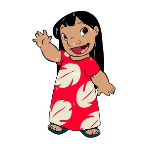
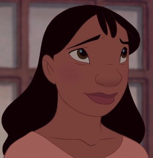
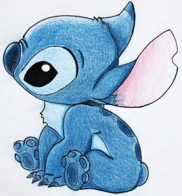

Lilo was a young Hawaiian Island girl living on the island with her older sister Nani. She likes doing hula or Hawaiian Dance and her hobbies include photography of obese tourists, talking about creatures from horror/sci-fi movies and capturing and rehabilitating Jumba's evil genetic experiments. She is native believing that Mertle, Elena Teresa and Yuki are her friends despite the fact that Mertle cruelly hates her (except) for the thre other Girls, even though they dont tell her that and often comes up with several uinconventional ways to befriend them.

Nani is the older sister of Lilo Pelekai and after their parents were unexpectedly killed in a car accident one night during a storm. As the older sister she had to become an legal guardian to look after sister. As a result of having to suppoirt herself and lilo she is often stressed and busy. Her intense schedule often interferes with her relationship with her boyfriend David and somewhat prevents from having friends. He makes several attempts to treat Nani on a date only to meet rejection due to her busy schedule. nani and Lilo care deeply for each other and this strong bond os showen continnously throughout the film.

Stitch, originally named experiment 626. Designed to be abnormally strong, virtually indestructible and super intelligent, Stitch was built with the pupose of spreading chaos and misery across the universe. His intended function was challenged by his developed relationship with ayoung orphan named Lilo, who adopted Stitch into her Ohana with family in Hawaiian.